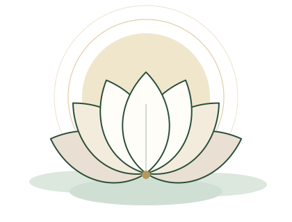

ชมรมญาติธรรม พุทธธรรมกรรมฐาน
เรียนรู้ธรรมะ ฝึกใจให้สงบ
ร่วมสร้างประโยชน์แก่สังคม
ชมรมญาติธรรม พุทธธรรมกรรมฐาน เป็นชมรมอิสระของผู้สนใจในธรรมะและการภาวนา ที่มารวมกันเพื่อศึกษาและเผยแผ่หลักธรรมคำสอนพระกรรมฐานสายหลวงปู่มั่น ภูริทัตโต พร้อมทั้งร่วมกันทำกิจกรรมจิตอาสาและสาธารณประโยชน์
- พระกรรมฐานสายวัดป่า
- ศึกษาและปฏิบัติภาวนา
- จิตอาสาเพื่อสังคม
ธรรมะแนะนำ
พุทธพจน์จากพระไตรปิฎก
คำสอนของพระพุทธเจ้าจากคัมภีร์ธรรมบท พร้อมคำแปลและที่มา สำหรับน้อมนำมาพิจารณาในแต่ละวัน
คลังธรรมะ
บทความล่าสุด
บทความธรรมะอ่านง่าย จัดหมวดหมู่ตามศีล สมาธิ ปัญญา การเจริญสติ และธรรมะในชีวิตประจำวัน
เริ่มต้นภาวนา
ฝึกสมาธิด้วยคำบริกรรม "พุทโธ"
แนวทางเบื้องต้นสำหรับผู้เริ่มต้น ตามวิธีที่ครูบาอาจารย์พระกรรมฐานสายวัดป่าแนะนำโดยทั่วไป ใช้เวลาเพียงวันละ 10–15 นาที
จัดท่านั่งให้สบาย
นั่งขัดสมาธิหรือนั่งบนเก้าอี้ หลังตรงแต่ไม่เกร็ง วางมือขวาทับมือซ้าย หลับตาเบา ๆ
น้อมใจระลึกถึงพระรัตนตรัย
ตั้งใจว่าจะภาวนาเพื่อความสงบ และเพื่อประโยชน์แก่ตนเองและผู้อื่น
กำหนดลมหายใจพร้อมคำบริกรรม
หายใจเข้าระลึก "พุท" หายใจออกระลึก "โธ" ให้สติอยู่กับลมหายใจและคำบริกรรมอย่างต่อเนื่อง
เมื่อใจเผลอ ให้รู้แล้วกลับมา
ความฟุ้งซ่านเป็นธรรมดา เมื่อรู้ตัวก็กลับมาที่ลมหายใจและคำบริกรรมใหม่ โดยไม่ต้องหงุดหงิดตนเอง

ร่วมสร้างประโยชน์
กิจกรรมและจิตอาสา
ประกาศกิจกรรมที่กำลังจะมาถึง และสรุปกิจกรรมจิตอาสาและสาธารณประโยชน์ที่ชมรมได้ร่วมกันทำ
ติดตามข่าวสารของชมรมทาง Facebook
ธรรมะประจำวัน ประวัติและปฏิปทาครูบาอาจารย์ รวมถึงประกาศกิจกรรมและงานจิตอาสา เผยแพร่ที่เพจ Facebook ของชมรมเป็นประจำ